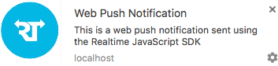

Introducing Web Push Notifications
Starting with Chrome 50 and Firefox 44 you are able to send push notifications to your website users, even when they are not browsing your website.
We have integrated this new feature into the Realtime Cloud Messaging Pub/Sub service to make your life easier.
How?
You probably noticed that your browser asked if you allowed notifications from this website. If you accepted you are already subscribed to your own private channel to receive notifications.
Your channel is: ...
This was performed through the new subscribeWithNotifications method in the Realtime JavaScript SDK.
Demo time! Clicking on the following button will send a new push notification to your private channel (only you'll see the push).
You should see a Chrome or Firefox Push Notification pop-up like this near your system tray (the first push may take a little more time to be delivered due to the underlying Firebase Cloud Messaging backend configuration).

or

This example uses a private channel for each user so you can send pushes at will, without annoying other users. A typical use case in a website would be using a global channel and subscribing each user to that channel. This way you could broadcast a single push to all users simultaneously. It´s powerful but should be used wisely.